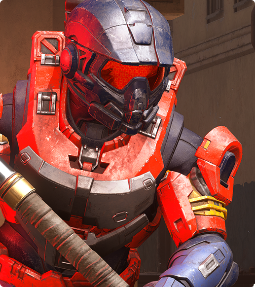
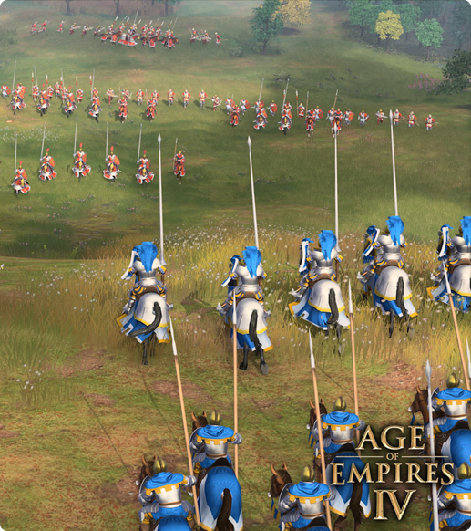
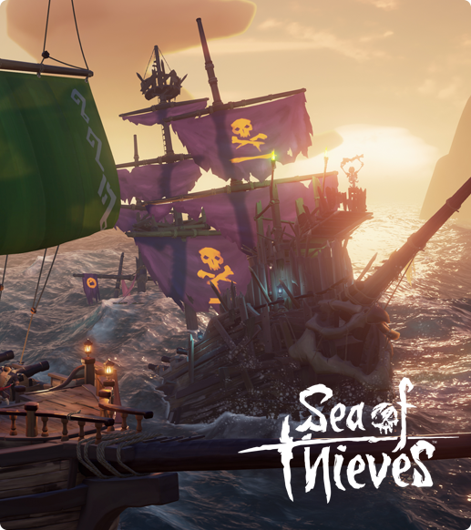
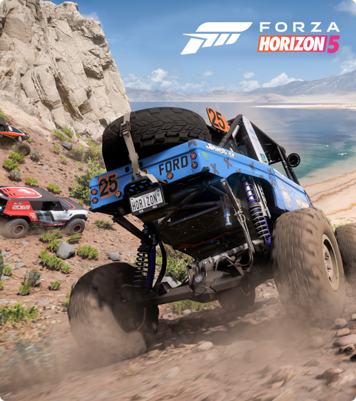

Desfrute de um ambiente de trabalho equilibrado
O windows 11 conta com ferramentas de fácil utilização que lhe permitem otiizar o espaço de trabalho e maximizar a produtividade. Em combinação com uma subscrição do Microsoft 365*, não existem limites para a produtividade. Obtenha mais informações sobre as sugestões e truques do Windows 11.
Organize Janelas com o Snap Assist
Participe numa chamada. Encontre respostas. Termine aquele trabalho. Quando estiver mais atarefado, a funcionalidade de encaixe poderá ajudá-lo a manter-se organizado de uma forma simples.
Os seus conteúdos, cuidadosamente selecionados
As suas fotografias favoritas. As notícias do mundo. A lista de tarefas do dia e a previsão meteorológica para amanhã. os Widgets permitem-lhe encontrar conteúdos relevantes para si. As coisas mais importantes pra si, sempre à distância de um gesto de percorrer.
Otimize o seu fluxo de trabalho
PowerPoint, Microsoft Edge, Microsoft Teams -- as aplicações de que necessita funcionam de uma forma totalmente integrada com as novas ferramentas de multitasking, como os Esquemas de encaixe, os Ambientes de trabalho e uma experiência de reancoragem mais intuitiva.
O browser que o coloca em primeiro lugar
Trabalhe, divirta-se, faça compras, transmita conteúdos ou interaja -- independentemente do qeu pretende fazer, o Microsoft Edge no Windows 11 ajuda-o a fazê-lo de uma forma rápida e seguda.
Para o trabalho e para o lazer
As aplicações de que necessita. Os programas que adora ver. Encontre-os rapidamente na nova Microsoft Store.
A mais recente tecnologia de desempenho para jogos de PC
Desfrute dos jogos mais recentes com gráficos incrivelmente realistas. Jogue com amigos em consola. Jogue com os seus periféricos favoritos. No que toca ao jogar à sua maneira, pode contar com o Windows 11.
- 
- 
-
Nunca Deixe de Jogar
Halo Infinite, Forza Horizon 5, Age of Empires IV — estes são apenas alguns dos títulos disponíveis no dia do lançamento com o Xbox Game Pass (subscrição vendida separadamente)
- 
- 